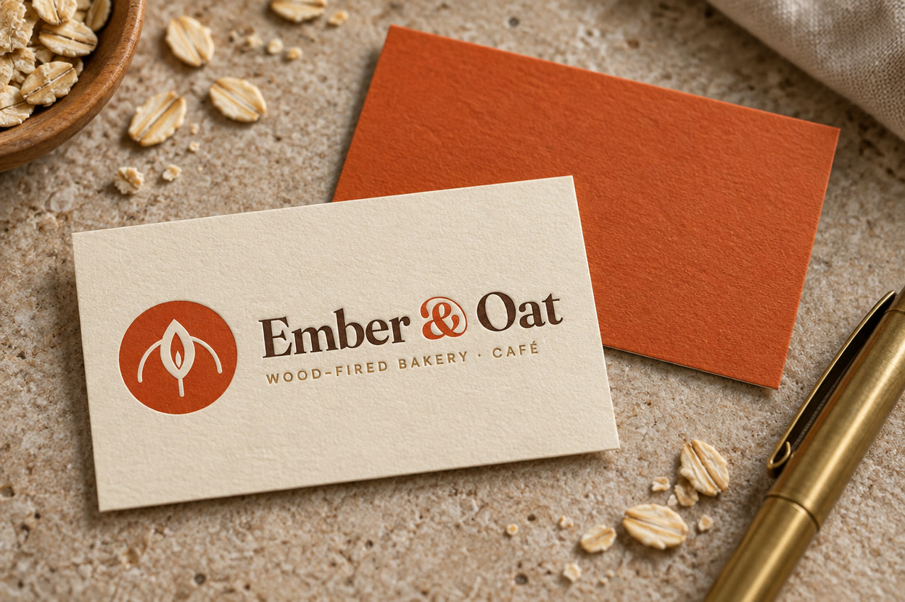
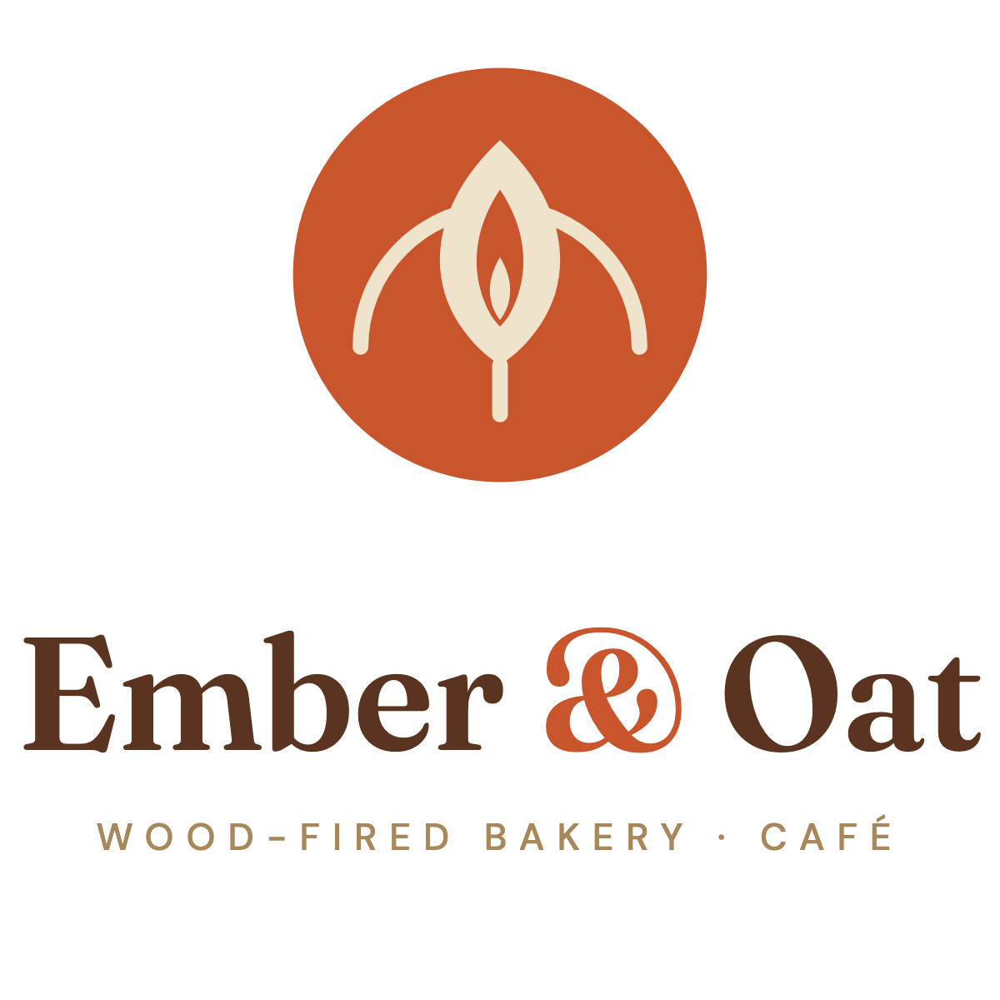
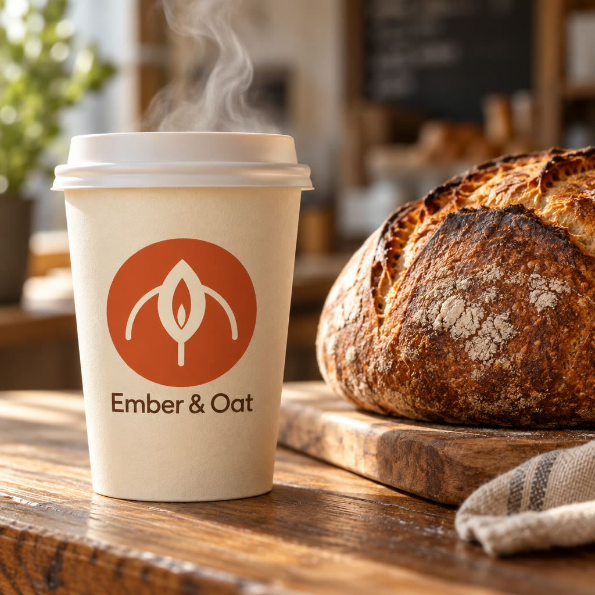
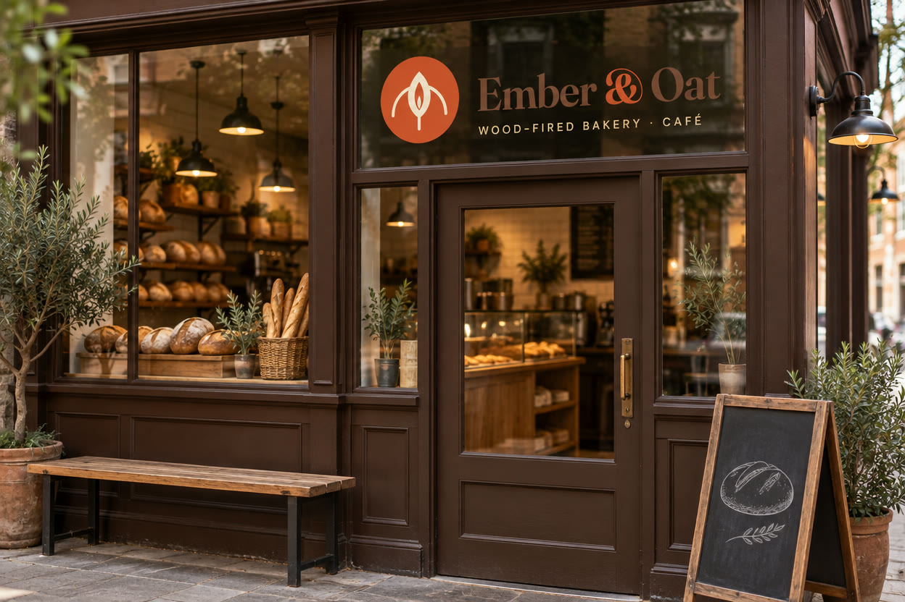
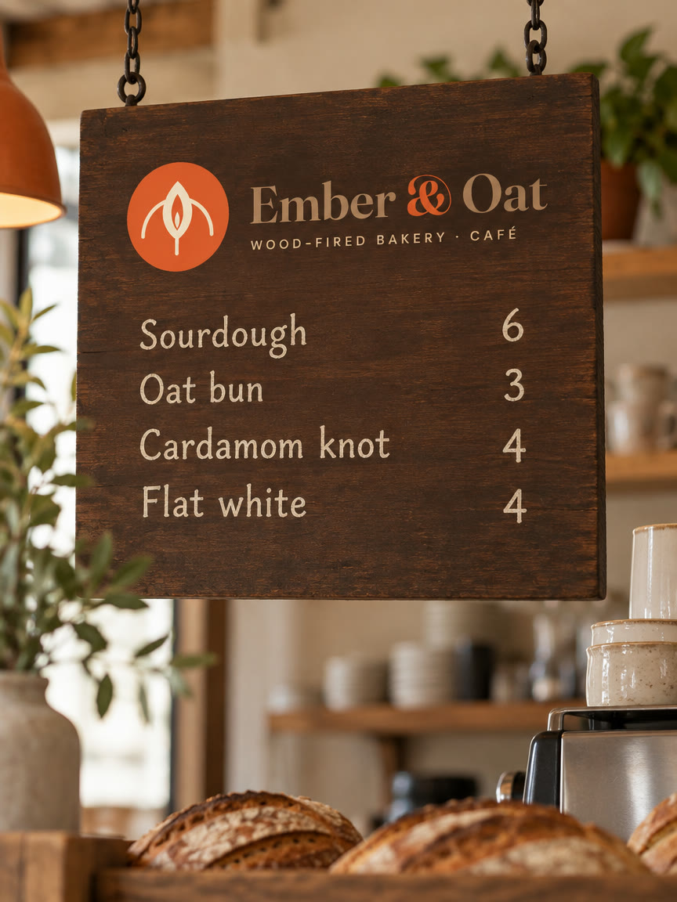
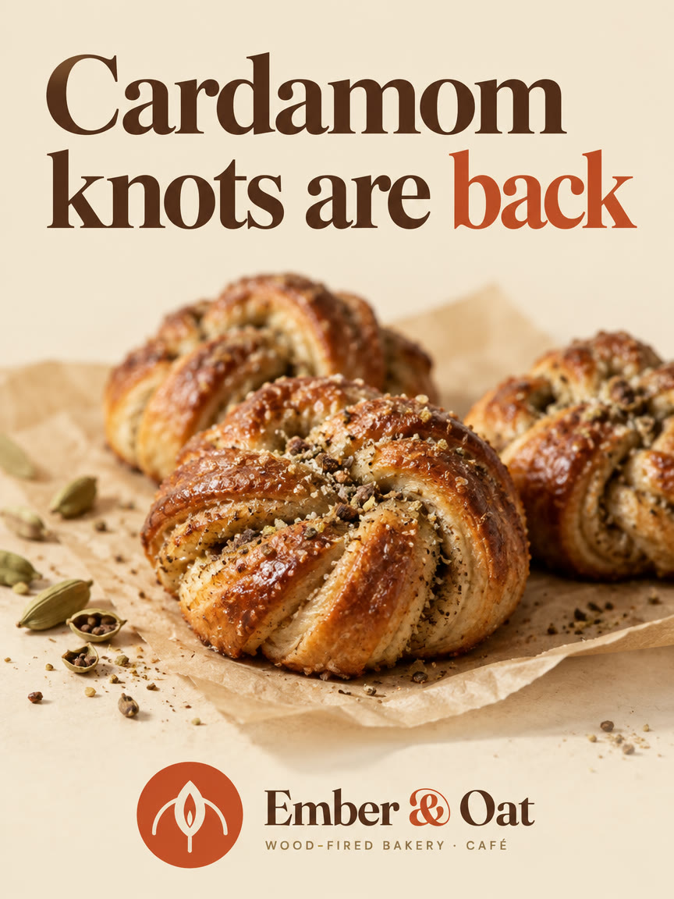
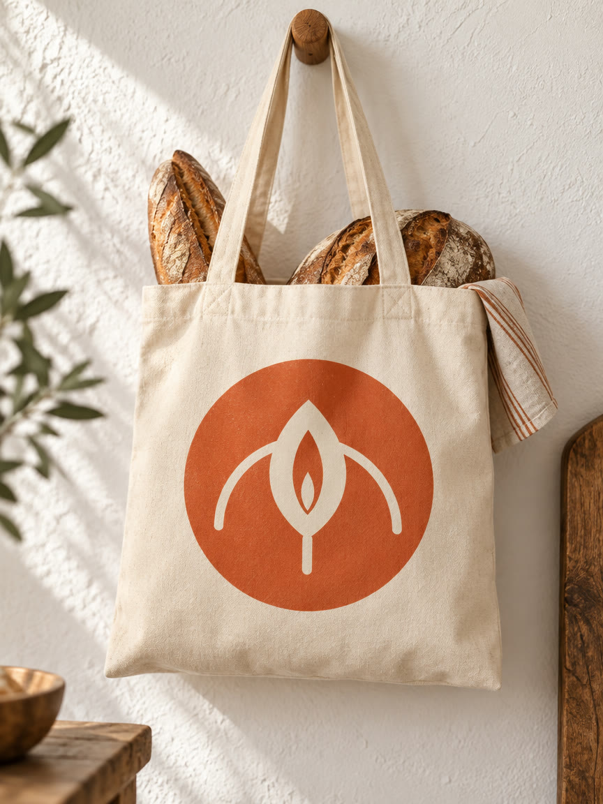
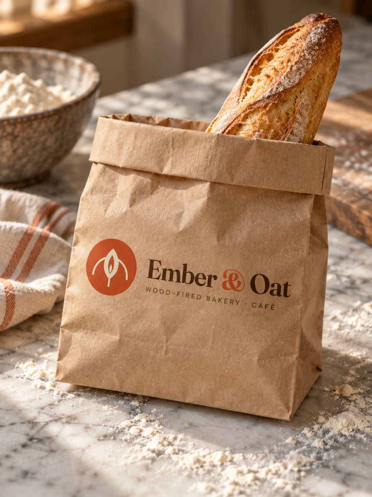
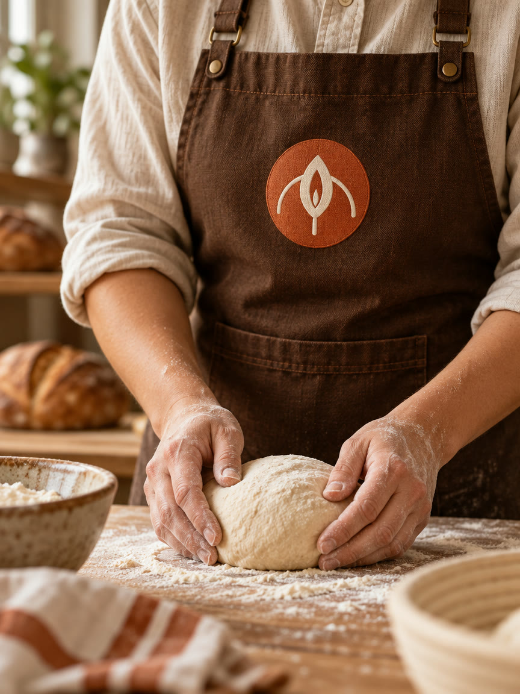

Brand guidelines
Wood-fired bread, slow mornings.
A neighbourhood bakery-café that bakes everything in one wood-fired oven: crusty sourdough, oat buns and cardamom knots, served with good coffee from 7 a.m.

01

Keep clear space of at least the height of the mark's stem around the logo. Never recolour, stretch, outline or rotate it.
02
03
Display · Fraunces
Ember & Oat
Text · DM Sans
A neighbourhood bakery-café that bakes everything in one wood-fired oven: crusty sourdough, oat buns and cardamom knots, served with good coffee from 7 a.m.
04
warmhonestcraftedunhurried
05






